原 P1 · 全66维条件输运 · 相阈值矩 · 非线性物理代表 · 决定驱动 Maxwell 计算。真实实验完成，正面与负面结果分别保留。
成像图是监督材料风险动作，不能自动称为 posterior mean。显式 Flow 的 proper score 有相对改善，生成样本仍严重违反原噪声尺度的必要校验。所有新模型在读取这两批 GT 前冻结；现在标签均已 EXPOSED。
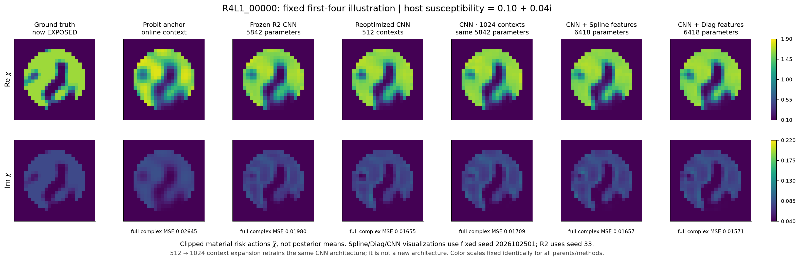
固定seed1示例，不按GT挑图。全部材料使用相同χ色标；6,418仅为局部head参数，约0.68M全局provider及物理基础图成本另外列出。
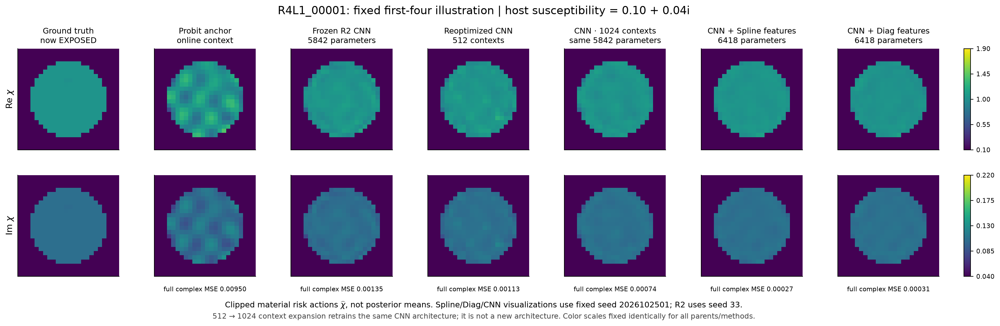
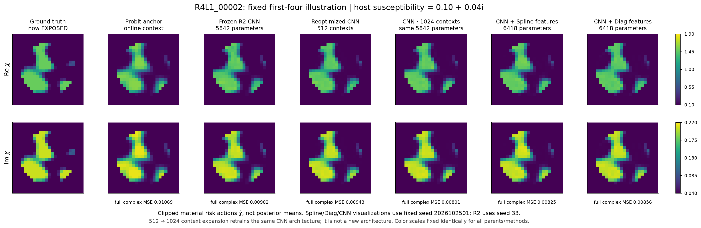
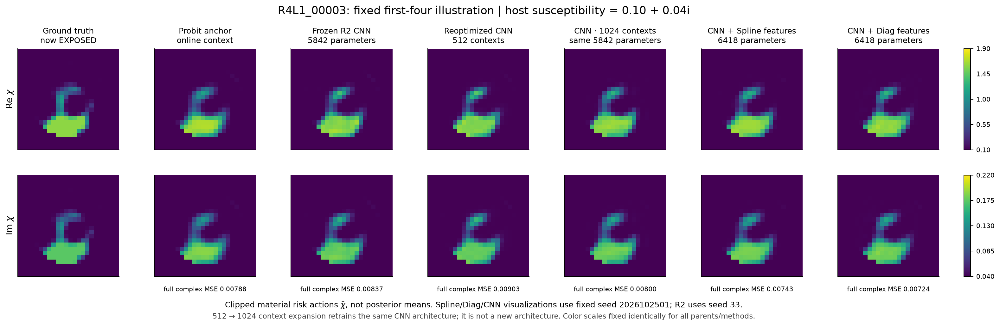
独立parent为统计单位，保留强普通CNN、Gaussian和空间打乱控制。
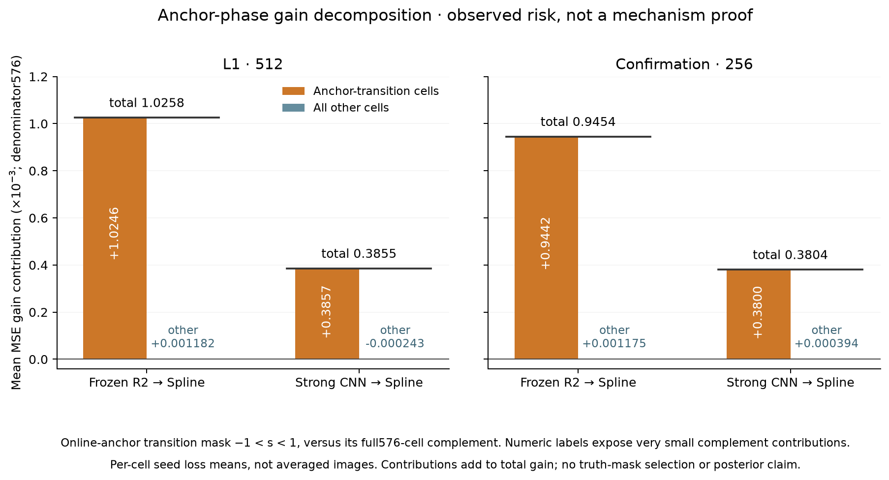
过渡相定义来自基础图；约99.9%增益在该区是描述性分解，不是新物理定理。
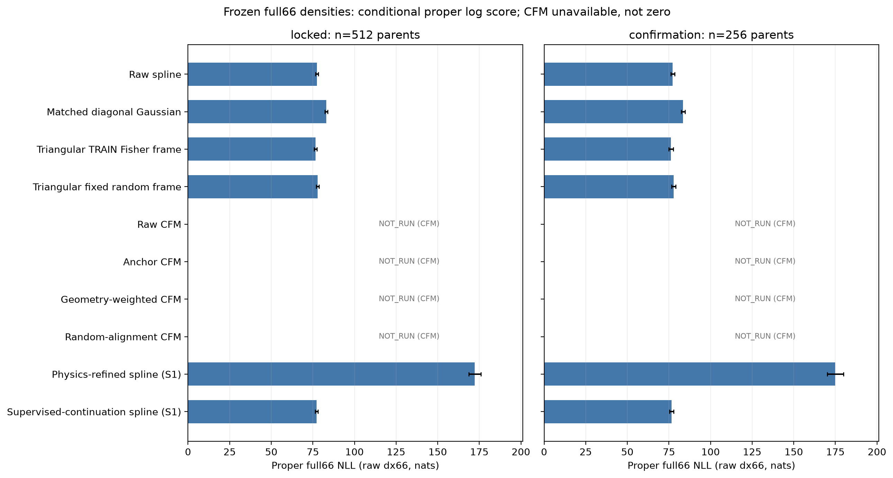
Spline和三角模型有真实properNLL；CFM数值NLL未合格项不以零填充。
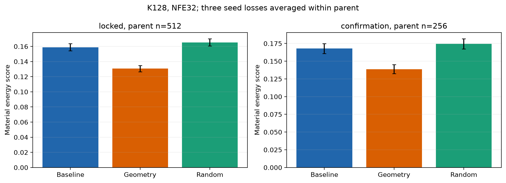
几何权重与同谱随机控制相比较；energy score改善不是FULL后验认证。
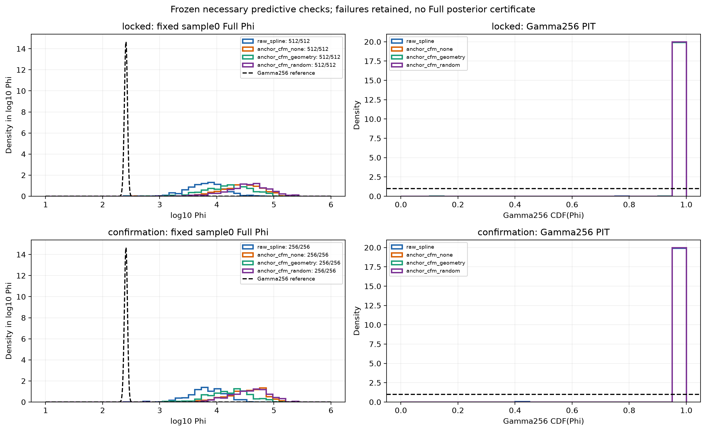
每对象固定index0，期望Phi均值256；实际大一至两个数量级。
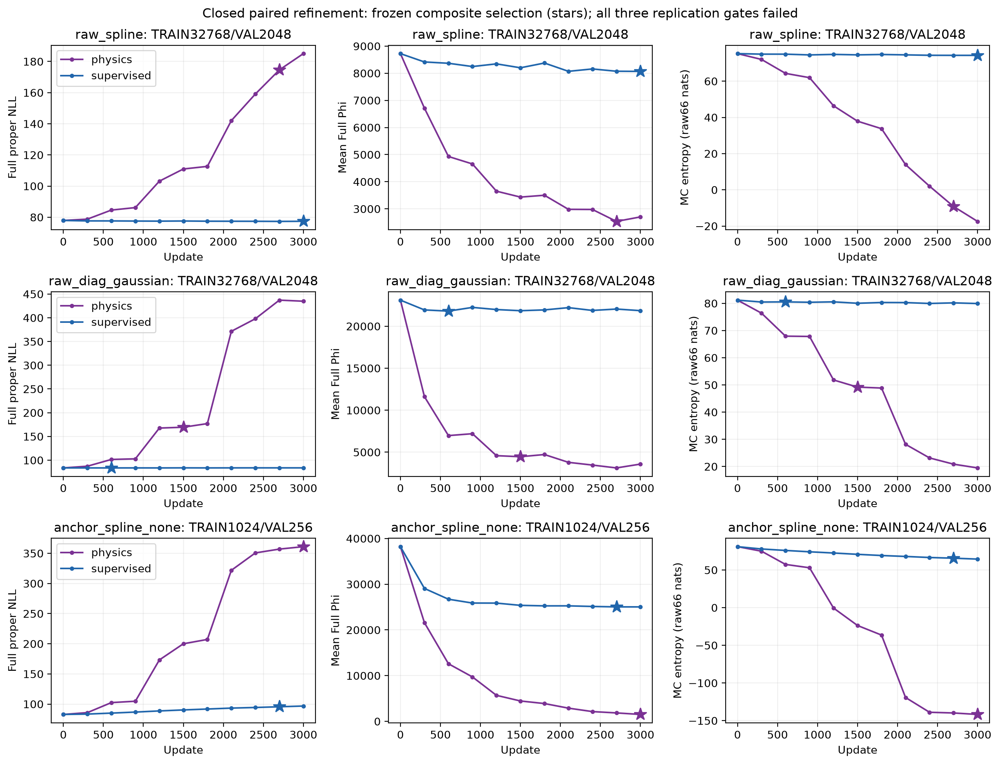
真实Full梯度能降低response residual，却损害NLL与分布覆盖；成对监督控制保留。
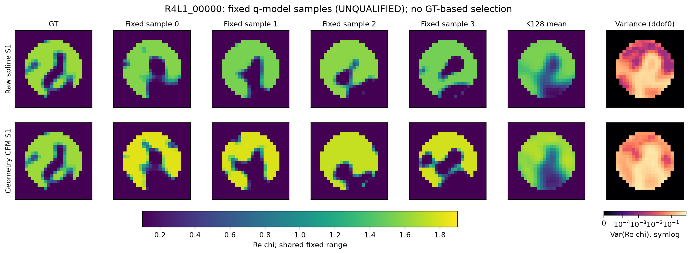
真实模型样本，不以最接近GT者评分；不宣称这些是已校准posterior samples。
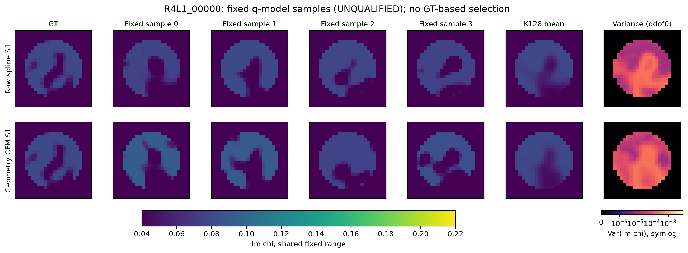
与实部同一固定样本；原被动材料和decoder支持不变。
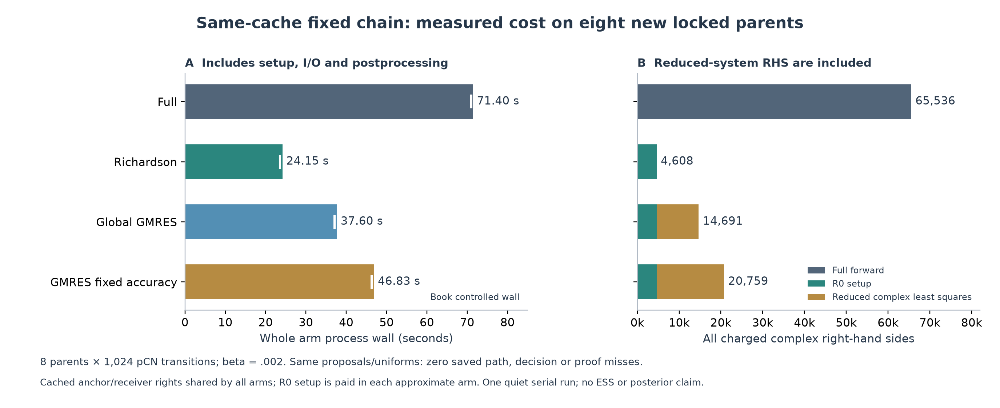
安静串行8对象重放；含setup与reduced RHS。没有以较差混合换取求值节省。
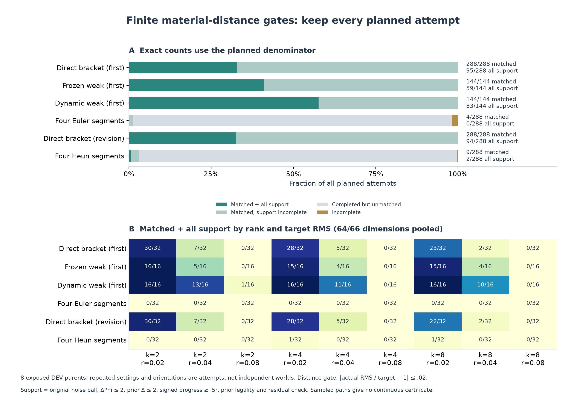
保留全部计划分母，原teacher1%门没有被事后2%适用门改写。
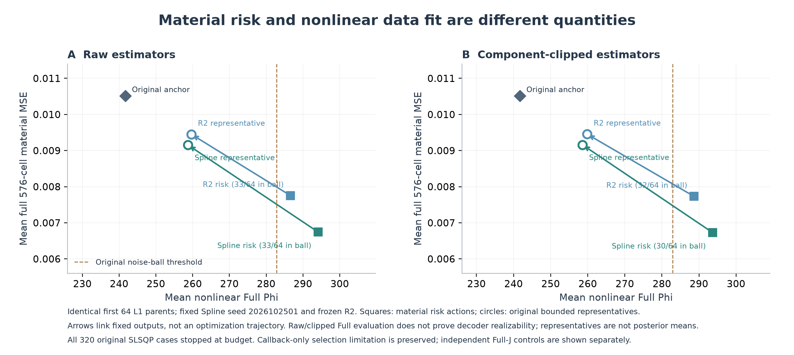
固定前64对象，所有原投影预算停止和fallback保留；箭头不是收敛轨迹。
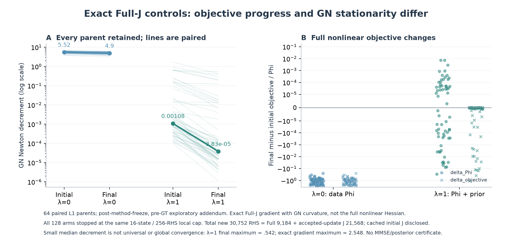
GT开放前冻结；data-only更拟合但材料风险更差，prior-aware point接近原baseline。